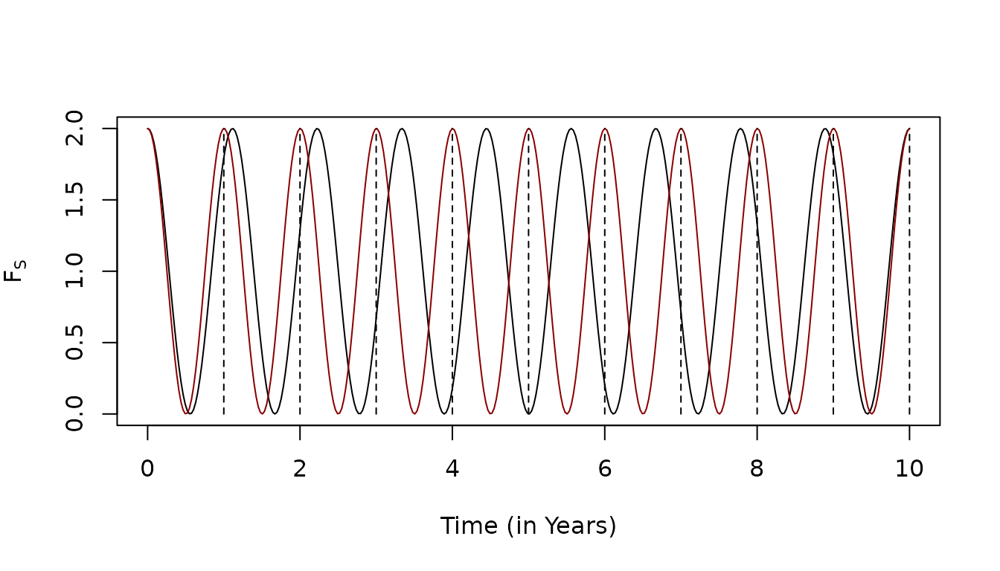

The Seasonal Pattern Function Library
-
sin— a generalized function family based on a trigonometric function.
Seasonal Forcing
Canonical Seasonality
Seasonal functions usually mean canonical seasonality: \[F_S(t+365) = F_S(t).\] While this motiviates the concept, it is not a necessary component.
In the following non-canonical seasonal function (black), the phase drifts by more than a month per year, so that over 10 years, there are only 9 cycles. The function is contrasted with a canonical seasonal function (dark red):
library(ramp.func)
F_phase = make_F_t(makepar_F_spline(c(0:10)*365, yy = c(0:10)*365/10))
F_dS = function(t, phase){1+ sin(2*pi*(t-phase)/365)}
tt = seq(0, 3650, 10)
phase=F_phase(tt)
plot(tt/365, F_dS(tt, phase-90), type = "l", xlab = "Time (in Years)", ylab=expression(F[S]))
lines(tt/365, F_dS(tt, -90), col = "darkred")
for(i in 1:10){
segments(i, 0, i, 2, lty =2)
}
Seasonal Pattern Functions
Seasonal pattern functions, \(F_S(t),\) are a component in a composed time series function.
The value of the function is always positive: \[F_S(t) \geq 0.\]
-
The mean value of the function \(F_S(t)\) is one:
For canonical seasonal patterns, the mean value over a year is 1: \[ \frac{1}{365} \int_0^{365} F_S(t) \; dt = 1\]
For non-canonical seasonality patterns, the mean value over a time interval \((t_0, t_1)\) is \[ \int_{t_0}^{t_1} F_S(t) \; dt = t_1 - t_0\]